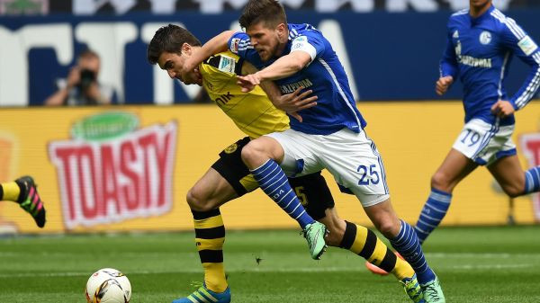
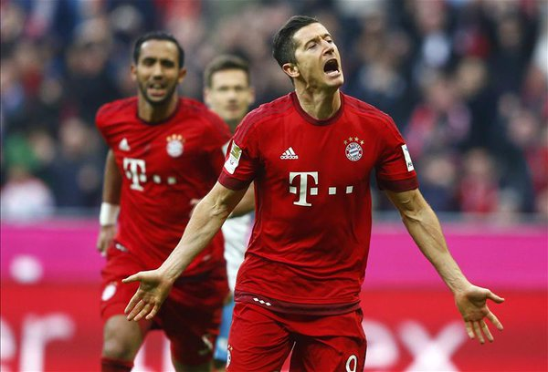

Dortmund laisse filer le Bayern après son nul à Schalke
BUNDESLIGA - Tenu en échec (2-2) chez le grand rival, Schalke 04, Dortmund a sûrement dit adieu au titre de champion d'Allemagne, dimanche.
Dortmund a été tenu en échec (2-2) dans le derby de la Ruhr dimanche à Schalke et se voit désormais distancé de sept points par le Bayern Munich,
après la 29e journée du championnat d'Allemagne.
Vainqueur la veille à Stuttgart (3-2), le Bayern file vers son 4e titre de rang, exploit inédit en Bundesliga. Assuré de terminer au 2e rang, Dortmund
a préservé son invincibilité en 2016, toutes compétitions confondues, trois jours après le nul (1-1) concédé face au Liverpool de son ex-mentor
Jürgen Klopp en Europa League. Le Borussia a reposé totalement Reus et partiellement Mkhitaryan et Aubameyang,
entrés respectivement après la pause et avant le dernier quart d'heure (73), en vue du quart retour européen jeudi à Anfield Road.

Bundesliga : avec un Lewandowski retrouvé, le Bayern Munich corrige Schalke (3-0)
BUNDESLIGA - Muet depuis quatre rencontres, Robert Lewandowski a retrouvé le chemin des filets avec un doublé, qui a mené le Bayern
Munich à la victoire contre Schalke (3-0). Le Borussia Dortmund, qui reçoit Hambourg ce dimanche, est provisoirement relégué à 10 longueurs.
Robert Lewandowski ne doute pas. Et il l'a prouvé ce samedi. Le Polonais a mis fin à sa série de quatre rencontres sans marquer,
avec un doublé. Il a participé activement à la victoire du Bayern face à Schalke (3-0), lors de la 30e journée de Bundesliga.
Grâce à ce cinquième succès consécutif en championnat, le Bayern prend provisoirement une marge de 10 points, avec encore quatre
rencontres à disputer. Le dauphin Dortmund est désormais dos au mur s'il veut conserver une maigre chance de titre. Les joueurs
de Thomas Tuchel affrontent Hambourg au Signal Iduna Park ce dimanche (15h30).
Après une première période poussive et uniquement animée par une tête de Lewandowski superbement sortie par Ralf Fährmann (30e),
l'équipe de Pep Guardiola a accéléré en seconde période. Le doublé de son avant-centre polonais est intervenu aux 54e et 65e minutes.
D'abord sur un enchaînement en pivot à la limite du hors-jeu, sur une remise de la tête d'Arturo Vidal, puis sur une tête décroisée
après un centre de Rafinha.